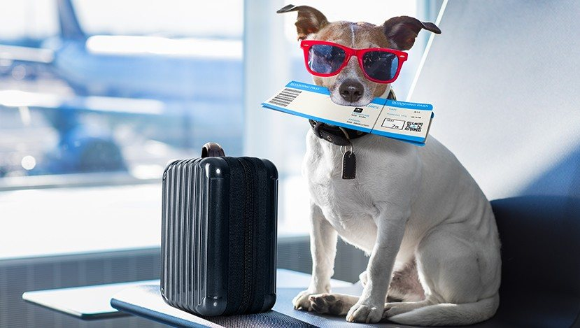
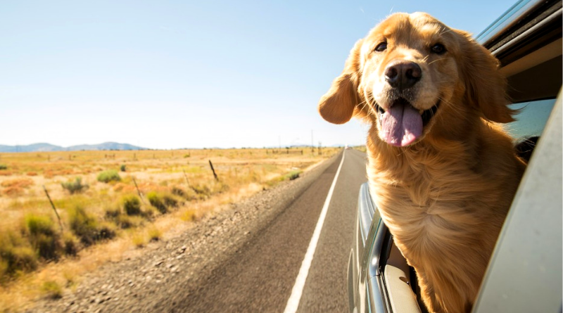

Viajes sin fronteras para tu compañero de cuatro patas
Ofrecemos servicios de traslado aéreo especializado para garantizar que tu mascota llegue segura y feliz a su destino, sin importar la distancia
Mas Información
Mudanzas sin preocupaciones para tu mascota
Facilitamos el traslado de tu mascota durante tu mudanza internacional. Nuestro equipo se encarga de todos los detalles logísticos para asegurar que tu amigo peludo esté a salvo y cómodo en su nuevo hogar.
Mas Información

Aventuras en carretera con tu mejor amigo
Explora el mundo junto a tu mascota. Proporcionamos servicios de transporte terrestre confiables para que disfrutes de viajes en carretera inolvidables con tu fiel compañero, brindándole la comodidad y seguridad que se merece
Mas Información